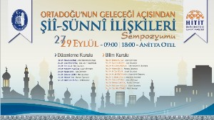

ORTADOĞU'NUN GELECEĞİ AÇISINDAN ŞİÎ-SÜNNî İLİŞKİLERİ SEMPOZYUMU
27-29 EYLÜL 2013, ÇORUM
AÇILIŞ KONUŞMALARI (27.09.2013)(10:00-12:00)I. TOPLANTI (27.09.2013)TARİHTE ŞİÎ-SÜNNÎ İLİŞKİLERİ1.Oturum (13:30-15:00):Şiî-Sünnî İlişkilerinin Tarihî Arka Plânı
II. TOPLANTI (27.09.2013)19. ASIRDAN İTİBAREN ŞİÎ-SÜNNÎ İLİŞKİLERİ
2.Oturum (15:30-17:00):Vehhabîlik Hareketinin Şiî-Sünnî İlişkileri Üzerinde Etkisi
3.Oturum (17:30-19:00): İran Devrimi ‘nin Mezhebî Yansımaları ve Takrib Çalışmaları
III. TOPLANTI (28.09.2013)YENİ ORTADOĞUDA MEZHEPSEL İLİŞKİLER
4.Oturum (09:00-10:30): Ortadoğu’da Mezhep Coğrafyası
5.Oturum (11:00-12:30): Körfez Krizi Sonrası Ortadoğu’da Şiîlik ve Sünnîlik
IV. TOPLANTI (28.09.2013)GÜNCEL MEZHEP TARTIŞMALARI
6.Oturum (14:00-15:30):Günümüz Ortadoğu’sundaBirtakım Mezhep Hareketleri
7.Oturum (16:00-17:30): Değerlendirme ve Sonuç Toplantısı
BOĞAZKALE VE HATTUŞA TARİHÎ MEKÂN GEZİLERİ
29.09.2013 (10:00-15:00)
e. Toplantı Gündemi:1.Oturum: Şiî-Sünnî İlişkilerinin Tarihî Arka Plânı
-Abbasîlerin Son Dönemlerinden İlhanlıların Yıkılışına Kadarki Süreçte Şiî-Sünnî İlişkileri, Yrd. Doç. Dr. Hanifi ŞAHİN
-İran Coğrafyasının Şiîleşme Süreci, Dr. Fatih TOPALOĞLU
-Safevîler Döneminin Şiî-Sünnî ilişkileri Üzerindeki Etkisi, Yrd. Doç. Dr. Mehmet ÇELENK
-Yemen’de Zeydi-Sünnî İlişkilerinin Tarihi Arka Planı, Yrd. Doç. Dr. Yusuf GÖKALP
2.Oturum: Vehhabîlik Hareketinin Şiî-Sünnî İlişkileri Üzerinde Etkisi
-Selefiliğin Şiîlik Değerlendirmesi Bağlamında Nefret ve Şiddet Söylemi, Prof. Dr. Zeki İŞCAN
-Geçmişte ve Günümüzde Şia’nın Ehl-i Sünnet Algısı, Prof. Dr. İlyas ÜZÜM
-Ehl-i Sünnet’in Şiîlik Algısı ve Temel Etkenler, Doç. Dr. Cemil HAKYEMEZ
- Şiî-Sünnî İlişkileri Bağlamında Günümüz Selefîliği, Yrd. Doç. Dr. Ahmet YÖNEM
3. Oturum: İran Devrimi ‘nin Mezhebî Yansımaları ve Takrib Çalışmaları-İran İslâm Devrimi ve Şiîlik, Prof. Dr. Hasan ONAT
-İran’da Şiî-Sünnî Yakınlaştırma Çalışmaları, Yrd. Doç. Dr. Doğan KAPLAN
-Şiîlerin Takrîbi ve Suudîlerin Teklifi, Yrd. Doç. Dr. Adem ARIKAN
4. Oturum:Ortadoğu’da Mezhep Coğrafyası
- Şiilik-Sünnilik İlişkisinin Sınırları ve Kapsamına Dair Metodolojik Mülahazalar, Yrd. Doç. Dr. Mehmet KALAYCI
- İslam Mezheplerinin Ortadoğu’daki Coğrafi Dağılımı, Prof. Dr. M. Ali BÜYÜKKARA
-Ağahan İsmailîlerinin Ortadoğu Coğrafyası Üzerindeki Etkileri, Yrd. Doç. Dr. Muzaffer TAN
-Ötekileştirme Vasıtası Olarak İbaha: İsmâîlîlik Örneği, Yrd. Doç. Dr. Ali AVCU
5. Oturum: Körfez Krizi Sonrası Ortadoğu’da Şiîlik ve Sünnîlik
- Son Dönem Irak Şiiliği, Doç. Dr. Muharrem AKOĞLU
- Şiî-Sünnî İlişkileri Çerçevesinde Irak’ta Sadr Ailesi, Prof Dr. Yusuf BENLİ
-Ayetullah Hûî ve Ayetullah Sistanî merkezli Şiîliğin Irak Siyaseti Üzerinde Etkisi,Dr. Mehmet TOPRAK
-Muharrem Etkinlikleri ve Günümüz Şiîliği, Doç. Dr. Cenksu UÇER
6. Oturum:Günümüz Ortadoğu’sunda Birtakım Mezhep Hareketleri
- Şiî Uyanışı Konusuyla İlgili Tartışmalar, Prof. Dr. Sönmez KUTLU
- Suriye’de Nusayri-Dürzi-İsmailî İlişkileri, Dr. Aytekin ŞENZEYBEK
-Suriye’de Mezhep Hareketlerinin Güncel Siyaset Üzerindeki Etkileri, Yrd. Doç. Dr. Ahmet BAĞLIOĞLU
-Günümüz Yemen Zeydîliği, Doç. Dr. Mehmet ÜMİT
7.Oturum: Değerlendirme ve Sonuç Toplantısı
